[TOC]
【计算机科学速成课】[40集全/精校] - Crash Course Computer Science
P1: Early computing
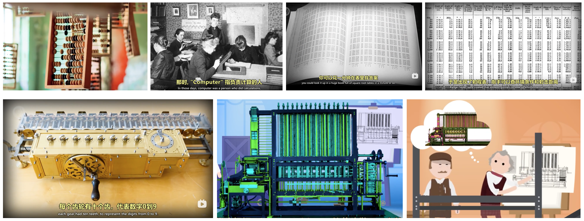
Manual calculation
2500 BCE, abacus, Mesopotamia (earliest device for computing, hand-operated) [0230]
1613 ~ 1800s, human computer & pre-computed tables [0430]
- earliest word “computer”: job title
- militaries Range Tables: the angle to set the canon [0640]
canon/shel’s design changed -> whole table recomputed — time consuming & led to errors —> 1822 Charles Babbage
Mechanical
1694, Leibniz, Step Reckoner 步进计算器, decimal [0458]
“it is beneath the dignity of excellent men to waste their time in calculation”
1st machine that could do + - x /, used for the next 3 centuries
slow: could take hours or days to solve real world problems
expensive: hand-crafted 手工制作
—> human pre-computed tables [0620]
Charles Babbage
- 1822, Difference Engine 差分机 (could approximate polynomials) [0732]
- during construction of the Difference Engine, Analytical Engine 分析机 [0815]
general purpose computer: given data and run ops in sequence; had memory and even a primitive printer
Electro-mechanical 电动机械
1890, tabulating machine 制表机, US census, roughly 10x faster than manual tabulations [0919]
[1050] Hollerith founded The Tabulating Machine Company…merged with other machine makers in 1924 -> International Business Machines Corporation or IBM
1944, IBM, Harvard Mark I (relay-based) [p2]
Electronic computing 电子计算
1943, Colossus MK 1 (vacuumtube- based)
P2: Electronic Computing
relays 继电器 –> thermionic valve热电子管 (diode二级 –> triode) –> transistor晶体管
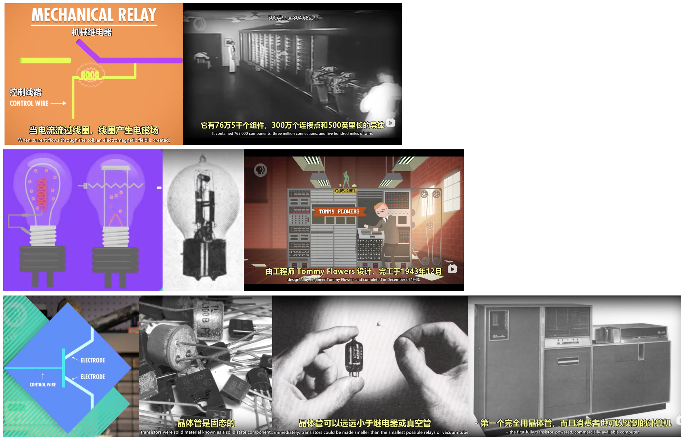
Relays 继电器
[0135] relays 继电器 — [0105] Harvard Mark I, IBM 1944(One of the largest electro-mechanical computers, 见图4)
slow switching speed: mechanical arm has mass –> can’t move instantly (50 times/s in the 1940’s)
wear and tear 齿轮磨损: Anything mechanical that moves will wear over time
- relays increases, probability of failure increases
- replace, on average, one faulty relay every day, big problem in the running important, multi-day calculation
- These huge, dark, and warm machines attracted insects — bug
Thermionic valve 热电子管
[0345] thermionic valve 热电子管, 1904, electrical component
- two electrodes电极 inside an airtight glass bulb 气密玻璃灯泡 — first vacuum tube真空管
- thermionic emission 热电子发射…electrode2 attract electrons to create the flow of our electric faucet
- only if electrode2 positively charged (negative or neutral charge, electrons not attracted across the vacuum)
- [0415] diode 二极管: electronic component that permits the one-way flow of current
- needed a switch to turn flow on | off
[0425] triode vacuum tubes 三级管: 1906
1906, American inventor Lee de Forest, added a third “control” electrode that sits bt the two electrodes in Fleming’s design
- positive charge to control electrode –> permit the flow of electrons as before
- manipulate control wire –> open or close the circuit
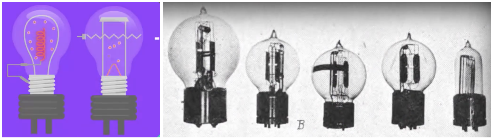
no moving parts — less wear, switch thousands of times per second
become the basis of radio, long distance telephone
fragile, and can burn out like light bulbs
initially expensive, a computer might require hundreds or thousands of electrical switches
by the 1940s, cost and reliability improved, electro-mechanical computing –> electronic computing
[0540] first large-scale use of vacuum tubes for computing — 1943 12, Colossus MK 1 (见图5)
- first version of Colossus contained 1,600 vacuum tubes
- regarded as the first programmable, electronic computer
- plugging hundreds of wires into plugboards…set up the computer to perform the right ops
- had to be configured to perform a specific computation
[0635] first truly general purpose, programmable, electronic computer: 1946, ENIAC
By the 1950’s, vacuum-tube-based computing reaching its limits
Transistor 晶体管
[0736] transistor晶体管: 1947, Bell Lab scientists
- 2 electrodes sep by semiconductor半导体 (a material that sometimes can conduct electricity)
- the control wire attaches to a “gate” electrode
- changing the electrical charge of the gate –> manipulated the conductivity of the semiconducting material
faster: switch 10,000 times/s, today millions/s
smaller:could be made smaller than the smallest possible relays or vacuum tubes, today < 50nm in size
running longer: transistors were solid, unlike vacuum tubes made of glass and with carefully suspended, fragile components, today can run for decades
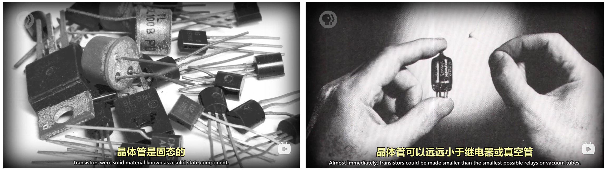
first fully transistor-powered: 1957, IBM 608 (smaller and cheaper computers, 见图6)
[0930] most common material used to create semiconductors is silicon –> Silicon Valley; Shockley Semiconductor…employees later founded Intel
P3 Binary, Bool Logic & Logic gates
[0025] electro-mechanical devices: repre decimal numbers by teeth on a gear;
electronic computers with transistors: turn the flow of electricity on | off
Why Binary
[0040] Binary…”of two states”
[0115] possible to use transistors to allow for diff levels of current
Some early electronic computers ternary, even quinary (5 states)
more intermediate states –> harder to keep them all sep, nearby signals can get mixed up
gets worse with transistors changing states millions of times per second
just ‘on | off’ –> most distinct signal to minimize these issues[0150] Another reason computers use binary: entire branch of mathematics already existed that dealt exclusively with T/F — Boolean Algebra 布尔代数
George Boole, self-taught English mathematician in the 1800s
Bool Logic & Logic gates
[0243] 3 fundamental ops: NOT | AND | OR, [0305] easily build boolean logic out of transistors
- [0400] NOT gate, [0525] AND gate, [0610] OR gate, [0715] XOR
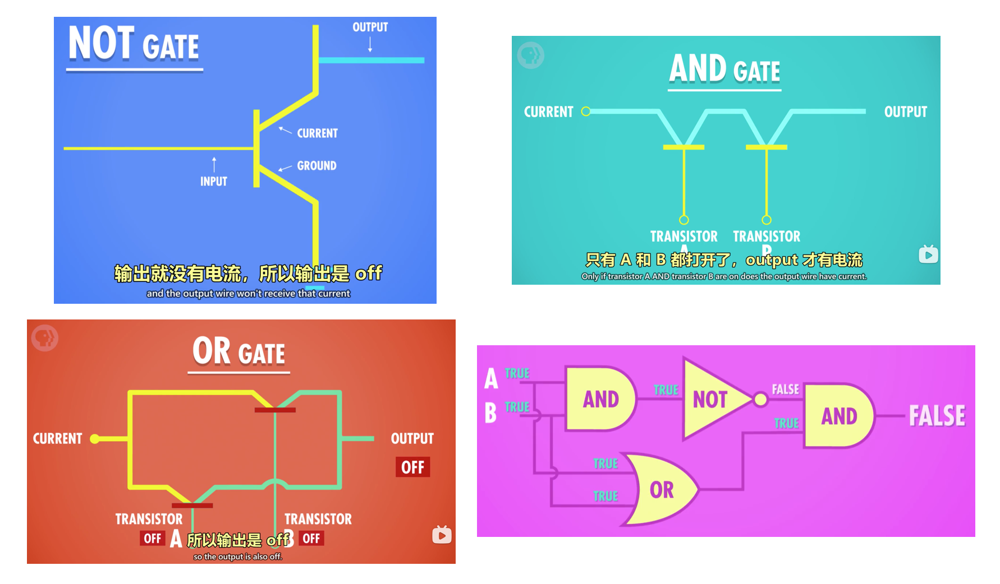[0443] call them gates they ctrl the path of current
P4 Represent numerical data in Binary
[0015] how represent info beyond T/F — math: T/F states –> 1 | 0
- represent larger things –> add more binary digits to the front (same as decimal)
Bit
[0315] a “bit“: Each binary digits, 1 or 0
8-bit computers, or 8-bit graphics or audio…8-bits such common in computing — special word: a byteKilobytes KB, Megebytes MB, Gigabytes GB, Terabytes TB,
[0430] 32- | 64-bit computers, operate in chunks of 32 or 64 bits
computers today use 32-bit color graphics — Instagram photos
Numerical repre
[0456] Most computers use the first bit for the sign: 1 for negative, 0 for positive, remaining (31 bits) for the number itself
[0550] “floating point” numbers
- IEEE 754 standard repre: scientific notation, significand有效数字 & exponent指数
- [0630] 32-bit repre…
Text & other file format repre
[0645] text repre: number the letters of the alphabet
[0720] ASCII: 1963, 7-bit code for 128 values, allowed diff computers built by diff companies to exchange data
- only designed for English
- a byte has 8 bits — soon became popular to use codes 128 ~ 255 previously unused, for “national” char
- national char codes worked pretty well for most countries
- broke with the rise of computing in Asia (Chinese and Japanese have thousands of chars) — multi-byte encoding schemes, but mutually incompatible
[0915] Unicode: universal encoding scheme
- most common version of Unicode: 16-bit
- encoding letters: same as ASCII by binary numbers
- other file formats - like MP3s or GIFs, use binary numbers to encode sounds or colors of a pixel in our photos, movies, and music — long sequences of bits
P5: Calculation & ALU
[0015] Representing and storing numbers is important for a computer, but the real goal is computation: manipulate numbers in a structured and purposeful way — Arithmetic and Logic Unit (ALU)
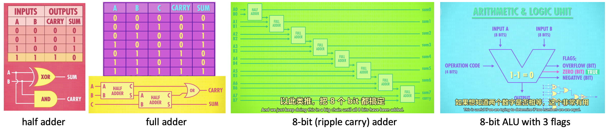
Arithmetic unit & Adder
[0130] arithmetic unit: numerical ops
[0145] addition circuit — [0230] 1 = true & 0 = false in bin
- [0210] half adder (single-bit): bit A, B ==> bit sum, carry (图1)
- [0345] Full Adder (multi-bit): bit A, B, C (carry) ==> bit sum, carry (图2)
[0440] 8-bit (ripple carry) adder 行波进位加法器 (图3)
- [0530] overflow: exist a carry in 9th bit — sum too large to fit in 8-bit
- [0605] avoid overflow: more adder -> 16 or 32 bits (more gates, take time for carries to ripple forward)
[0635] modern computers use diff adding circuit: ‘carry-look ahead’ adder
[0640] 8 general ALU ops… (how substraction implemented???)
- no multiplication & devision — simple ALUs do multiplication by a serious of addition
Logic unit
[0735] logic unit: logical ops & simple numeric test (e.g. negative test), 0-testing circuit (for equality) [0750, 0945]
8-bit ALU
[0850] 8-bit ALU with 3 flags (图4)
[0045, 0815] Intel 74181, 1970: 4-bit ALU, 70 gates, cann’t multiply & devide…
P6: Memory: Registers & RAM
[p4 0538] computers must label locations in their memory…known as addresses, in order to store and retrieve values
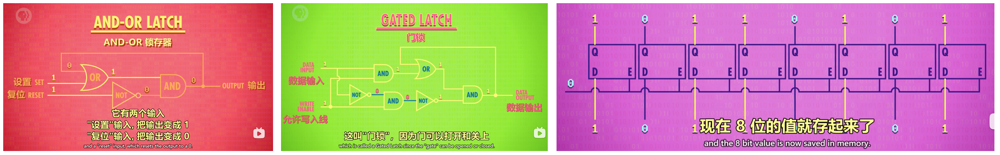
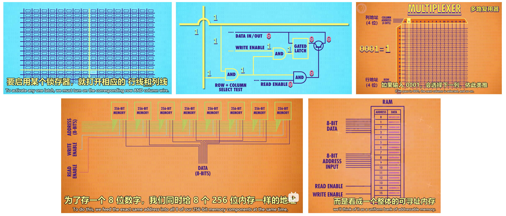
AND-OR latch & Gated Latch (1-bit info)
[0120] AND-OR latch 锁存器: store 1-bit info (AND for storing 0, OR for 1) [图1]
- (0, 0) => whatever is last put in
- [0315] 2 input ==> 1 input Gated Latch 门锁 [图2]
8- / 256-bit register
[0435] store 8 bits of info: put 8 latches side-by-side — (8 bit) register 寄存器 [图3]
early 8-bit register -> 16-bit, 32bit -> today 64-bit
Putting latches side-by-side works ok for a small-ish number of bits
64-bit register: 64 (input wire) + 64 (output wire) + 1 (write-enable wire) = 129 wires; 256-bit –> 513 wires
[0520] 256-bit memory — 16*16 latch matrix [图4, 5]
- only one single latch write-enabled at any given time ==>allow a single, shared, write-enable && date-in wire
- write date in on a particular latch
- turn on the corresponding row AND column wire — activate this latch
- turn on the (single, shared) write-enable wire
- put data in the (single, shared) data-in wire
- same trick with a read enable wire
wire saving: 16 rows and columns for the latch selection, 1 data-in wire, 1 write-/read-enable wire = 35 wires
- [0700] latch selection & multiplexer [图6]
- 16 rows && cols ==> 4-bit number of row/col addr (8-bit of addr in total)
- latch address => turn on the corresponding row/column — 2 multiplexer 多路复用器 component (1 for row selection, another for col)
- [0848] 8*256-bit memory ==> store 256 8-bit data [图7]
given a (8-bit) address to all 8 256-bit memory, each 256-bit memory component store 1 bit info (out of the total 8-bit info)
RAM
[0915] think of the 8* 256-bit memory as a uniform bank of addressable memory — RAM (256 addrs, each hold an 8-bit value) [图8]
[0930] modern computers scale to megabytes and gigabytes of memory
- 8 bits (addr) to provide addresses for 256 bytes memory
- gigabyte (a billion bytes, 2^30) of memory: 32-bit addresses** (2^16 * 2^ 16 matrix)
[0955] RAM: access any memory location at any time in a random order
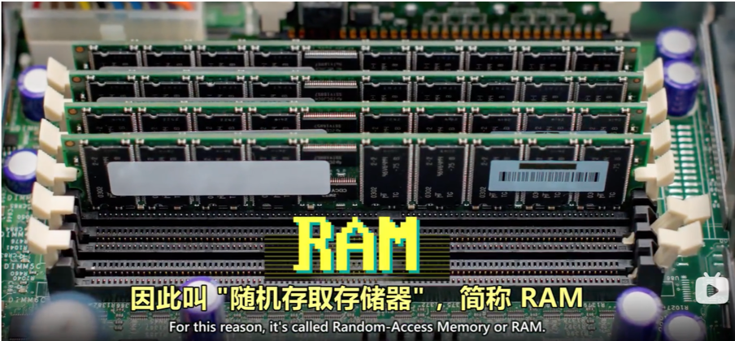 - [0040] stores things only when power stays on ==> persistent memory: survive without power
[1015] an actual stick of RAM, a 1 MB RAM module from the 1980’s: 128*64 bits * 4 * 32 * 8 = 8m bits = 1 MB
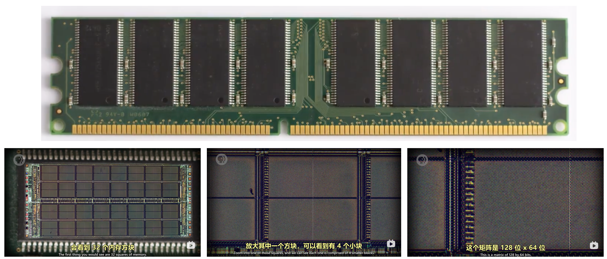
P7 CPU
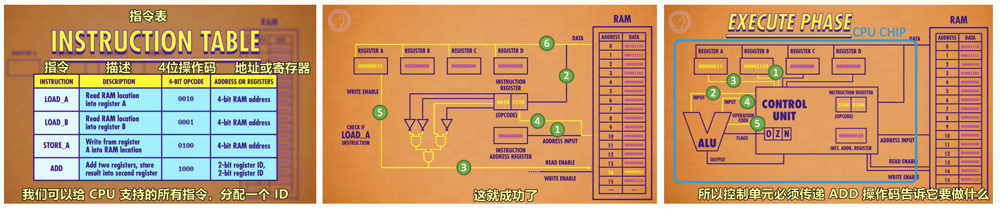
[0020] 2 types of computer memory
- Registers – small, linear chunks of memory, store 1 byte
- RAM — a larger bank of memory that can store many numbers located at diff addr
[0040] CPU: Central Processing Unit, to execute programs (a series of individual instructions: “instruct”指示 the computer what to do)
[0125] (cpu) microarchitecture - [0500] CPU run fetch/decode/execute cycle over & over
- [0320] Control Unit: decode & interprete instruction, [0455] directing all of the diff parts of the CPU
[0135] a LAOD_A, LOAD_B, ADD, STORE_A example… (图1～3) - with an instruction completed, all wire turned off, fetch next instruction (instruction register 0 -> 1)
- [0545] Add — [0650] save ALU output into Register A
ALU output cannot write into registerA directly — new value would ripple back into the ALU and then keep adding to itself
solution: Control Unit uses an internal register to temporarily save the output, turn off ALU, save data into registerA - [0805] clock: keeping the CPU ticking (from fetch -> decode -> exe over & over)
- regularly trigger an electrical signal, which used used by the Control Unit to advance the internal op of the CPU
- Clock Speed: speed CPU carry out each step of the fetch-decode-execute cycle per second —
Hz- [0925] n Hz: n clock cycles per second
- clock cycles: time interval CPU carry out each step of the fetch-decode-execute cycle
- [0940] overclocking/underclocking: increase/decrease the speed of CPU — dynamic frequency scaling
- overclocking too much can either overheat the CPU, or produce gobbledygook 乱码 as the signals fall behind the clock
- underclocking: save power, important for batteries
P8 Instructions & Programs
- [0235] instruction
jump(set instruction_address_register.value): change order of instructions / skip some instructions - [0320] instruction
halt: program done — allow to sep instruction & data in the same RAM - [0505]
infinite loop: jump back bf hit halt — conditional jump, e.g. JUMP_NEGATIVE, JUMP_IF_EQUAL, JUMP_IF_GREATER - [0655] divide program:
SUB,JUMP_NEGATIVE,JUMP,ADD,STOREinstructions — add division func to ALU - [0825] 4 bits of opcode & data address: max 16 instructions & 16 address
- instruction length: 32-/64-bit instructions
- variable length instruction 可变长度指令: e.g. HALT needs no extra value (data address), JUMP needs
[0910] 1971 Intel 4004 CPU: 46 instructions, 740 KHz (today xx GHz) [p7 0903] , 1st CPU to put all into a chip
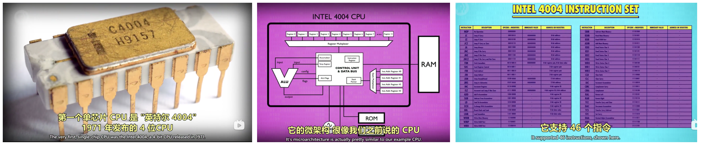
[0935] Intel Core i7: thousands of instructions, instruction variants 1~15 bytes
P9 Advanced CPU Design
make processors faster (boost cpu performance)
- [0025] improve switching time of transistors
- [0058] complexity-for-speed tradeoff
- add divide instruction in ALU (prev imp by serious subtractions until hit <= 0)
- [0137] instruction set getting larger & backwards compatibility: instruction set extends, people have written programs to use them — hard to remove them
[0230] high clock speeds and fancy instruction sets lead to problem: how quickly getting data in / out of the CPU — bottleneck is RAM
[图]
- CPU-RAM link: BUS(sets of data wires for data transmitted to/from RAM)
bus might only be a few cm long, electrical signals traveling near the speed of light
CPU op at GHz speeds, small delay could problematic
need time for RAM to lookup the address, retrieve the data, and configure itself for output - a “load from RAM” instruction might take mtp clock cycles to complete, processor idly waiting for the data
[0315] caching: put a little piece of RAM right on the CPU — cache
- cache close to processor, provide data quickly (typically in a single clock cycle, so no waiting required)
- when CPU request a data, transmit a whole block of data from RAM to cache
- computer data is often arranged and processed sequentially — CPU no need to go all the way to RAM
cache hit&cache miss
- not much space on a processor’s chip — cache just KB / MB in size (RAM usually GB)
- [0435] cache used like a scratch space临时空间 for intermediate values — cache async to RAM
- cache use
dirty bitflag to record the mistach for sync eth latter - sync when cache full & CPU request new mem
- bf cache erases the old block to free up space, if dirty, old block of data written back to RAM bf loading new
- cache use
[0535] instruction pipelining: parallelize ops
- processor perform the fetch-decode-execute cycle sequentially: 3 clock cycles for 1 instruction
- these 3 stages uses a diff part of the CPU –> parallelize –> (ideally) 1 single clock cycle 1 instruction, throughput x3
- problem 1: instruction dependency, e.g. fetch sth currently is about to modify (fetch old value)
- simple pipelined processors(SPP) have to look ahead for data deps, stall停止 pipelines if necessary
- out-of-order exeution: High-end 高端 processors(HEP), e.g. in laptops / smartphones, dynamically reorder instructions with deps
- [0750] problem 2: conditional jump instructions (change exe flow of a program dep on a value)
- spp perform a long stall waiting for the value to be finalized
- speculative execution 推测执行: HEP guess which way to go & start filling pipeline with instructions
- When jump resolved, if guessed correctly, pipeline already full of correct instructions and it can motor along without delay 马上运行; if guessed wrong, flush pipeline
- branch prediction: CPU manufacturers have dev sophisticated way to improve guess accuracy (today 90%)
- [0905] superscalar processor: > 1 instruction per clock cycle, exe instructions that require diff parts of the CPU all at the same time
- one step further: add duplicate circuitry for popular instructions, e.g. 4, 8 or more identical ALUs, exe math instructions in parallel
[0945] run several streams of instructions at once (above: optimize the execution throughput of a single stream of instructions)
- multi-core processors (mtp indep processing units inside of a single CPU chip)
- cores share some resources since they tightly integrated, e.g. cache, allowing to work together on shared computations
- [1015] mtp indep CPU (e.g. 2, 4)
supercomputer, e.g. in The National Supercomputing Center in 无锡, The Sunway TaihuLight (神威·太湖之光), 40,960 CPUs, each with 256 cores, each core 1.45 GHz
P10 Early Programming
[0025] how program load into memory?
Store data in punch card
[0050] early machine programming need (bf the dev of computers) in textile manufacturing 纺织业 for pattern fabric 图案纺织品
- 1801, programable textile loom 纺织机, store pattern for each row of cloth in a punched card 打孔卡片[图1, 2]
- punch cards (cheap, reliable, fairly human-readable) used to tabulate the 1890 US census – [p1 0919] [图3]
- census worker punch out a hole at appropriate position on each card, to store individual’s data
- when a card was fed into the tabulating machine, a hole would cause the running total for that specific answer +1
Store program in physical plug board of wires
[0215] early tabulating machines not truly computers: op fixed (only tabulate, not programmable), punched cards stored data, not a program
- next 60 years, these business machines grew in capability
- programmer trigger diff funcs throughcontrol panel控制面板 (aka plug boards): plug cables (to pass values and signals bt diff parts of the machine) into little sockets 插孔 [图n]
rewire 重新接线the machine each time for a diff program
by the 1920s, plug boards swappable可插拔, allow for diff programs (for diff funcs) be plugged into a machine- plug boards complicated to program — wires tangle 缠绕, IBM 402 account machine, popular in 1940s [图]
the ENIAC, completed in 1946, with many of plug boards, take time to wiring up
enormous cost of these early computers, weeks of downtime simply to switch programs was unacceptable
- plug boards complicated to program — wires tangle 缠绕, IBM 402 account machine, popular in 1940s [图]
Store program in computer memory
- [0352] late 1940~50s, electronic memory costs fell, size grew, possible to store program in computer memory, easily changed by programmers and quickly accessed by the CPU
- these machines were called Stored-program Computers
- [0415] Von Neumann Architecture (Unifying the program and data into a single shared memory): With enough computer memory, could store program & data program need
- hallmarks of a Von Neumann computer: a processing unit contains: an ALU + data registers + instruction register + instruction address register + a memory to store both data and instructions
first Von Neumann Architecture Stored-program computer: 1948, niversity of Manchester, nicknamed Baby
same arch used until now
- hallmarks of a Von Neumann computer: a processing unit contains: an ALU + data registers + instruction register + instruction address register + a memory to store both data and instructions
load program and data into the computer by punch cards
- [0510] load program (hundreds of instructions) and data into the computer by (stacks of) punch cards
into the 1980s almost all computers have a punch card reader: suck in a single punch card at a time & write content into mem
largest program ever punched into punch cards: 1955, US Air Force’s SAGE air defense system, 62,500 punch cards ~ 5 MB- once the program and data were in memory, the computer would be told to execute it
- At the end of a program results could be written out of computer memory and onto punch cards by punching cards
- [0635] punched paper tape 打孔纸带 [图]
Panel programming
[0655] another common way to program: Panel programming [图]
- Rather than having to physically plug in cables to activate certain functions, done with huge panels full of switches and buttons
- indicator lights to display the status of various functions and values in memory
Computers of the 50s and 60s often featured huge control consoles that look like this [图]
early home computers made for the hobbyist market use switches extensively, most home users couldn’t afford expensive peripherals like punch card readers
The first commercially successful home computer was the Altair 8800, 1975 [图]- To program the 8800:
- toggle the switches on the front panel to enter the binary op-codes for the instruction
- press the deposit button to write that value into memory
- in the next location in memory, toggle the switches again, for your next instruction deposit it and so on
- When entered whole program into memory, oggle the switches moves back to memory address 0, ress the run button and watch the little lights blink
- To program the 8800:
[0816] Whether it was plug board, switches or punched paper, Programming these early computers was the realm of experts: needs knowledge of the underlying hardware, so things like processor op-codes and register wits, to write programs — programming was hard and tedious, need a a simpler way to write programs — programming language